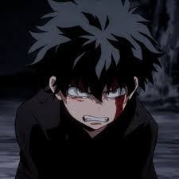

My Hero Academia
Released: April 3, 2016
Genre: Action, Superhero, Drama
In a world where nearly 80% of people have powers known as "Quirks," Izuku Midoriya is born without one. Despite this, he dreams of becoming the number one hero. After a fateful encounter with the legendary All Might, Izuku inherits the power of One For All and begins his journey at U.A. High School.
Cast

Deku
Voice: Daiki Yamashita

Bakugo
Voice: Nobuhiko Okamoto
Todoroki
Voice: Yuki Kaji
All Might
Voice: Kenta Miyake